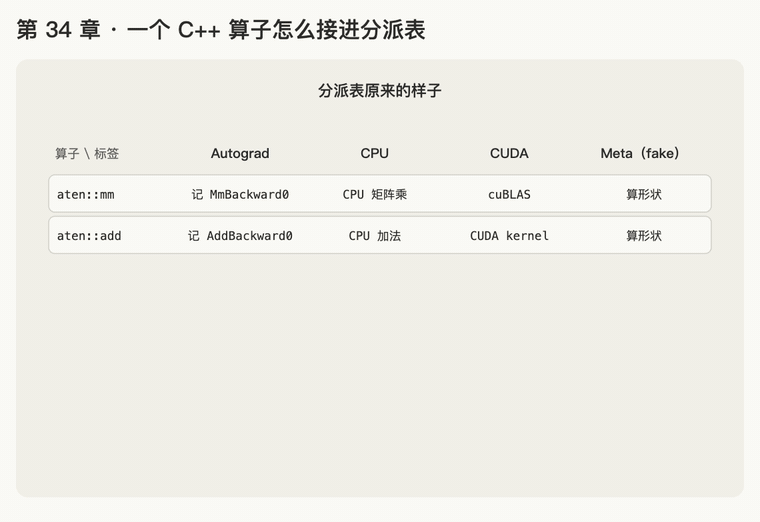

第 34 章 · C++ / CUDA 扩展：TORCH_LIBRARY 把 C++ 函数登记进分派表
本章回答：什么时候需要写 C++ / CUDA 扩展而不是 Triton？
TORCH_LIBRARY和TORCH_LIBRARY_IMPL各做什么？load_inline和setup.py两种构建方式怎么选？为什么手写的 C++ 不一定比 PyTorch 自带的快？
讲解日期：2026-11-15 · 上一章：第 33 章 注册自定义算子 · 下一章：第 35 章 量化与导出
对应原文：官方教程「Custom C++ and CUDA Operators」与torch.utils.cpp_extension文档（〔在线〕docs.pytorch.org/tutorials/advanced/cpp_custom_ops.html）；本讲义 第 3 章 分派器；CUDA 讲义 第 25 章 编译部署；本章编译和计时是本机 Mac（clang + ninja）torch 2.15.0 实测本章缩写：ATen = A Tensor library（PyTorch 的 C++ 张量库，
at::命名空间）；ABI = Application Binary Interface（应用 / 二进制 / 接口）；JIT = Just-In-Time（即时编译）；-O3= 编译器最高一档常规优化；CUTLASS = CUDA Templates for Linear Algebra Subroutines（NVIDIA 的线性代数模板库）；全部缩写见 附录 · 缩写与术语表
讲解
第一步：什么时候用 C++ / CUDA（2026-11-15）
| 路线 | 适合 |
|---|---|
torch.compile 自动融合（第 31 章） |
逐元素、规约的融合；先试它 |
| Triton（第 32–33 章） | 大多数自定义融合 kernel；Python 写、开发快 |
| C++ / CUDA 扩展（本章） | 要用 CUTLASS / CuTe、PTX 内联汇编、warp 级精细控制；要包装现成的 C++ / CUDA 库；CPU 上的特殊实现；部署时不想依赖 Python |
FlashAttention、DeepGEMM、vLLM 的很多 kernel 都是 CUDA C++ 写、用本章的方式接进 PyTorch 的。
一句话：先 compile，再 Triton；要 CUTLASS、PTX、包装 C++ 库或脱离 Python 时才写 C++ / CUDA 扩展。
第二步：三段 C++——实现、声明、登记（2026-11-15）
#include <torch/extension.h>
// ① 实现：普通 C++ 函数，参数和返回都是 at::Tensor
at::Tensor add_relu_cpu(const at::Tensor& x, const at::Tensor& y) {
TORCH_CHECK(x.sizes() == y.sizes(), "shape mismatch"); // 检查不过就抛 Python 异常
auto xc = x.contiguous(), yc = y.contiguous(); // 第 2 章：保证内存连续
auto out = torch::empty_like(xc);
const float* a = xc.data_ptr<float>(); const float* b = yc.data_ptr<float>();
float* o = out.data_ptr<float>();
at::parallel_for(0, xc.numel(), 1 << 16, [&](int64_t s, int64_t e) { // 多线程分块
for (int64_t i = s; i < e; ++i) { float v = a[i] + b[i]; o[i] = v > 0 ? v : 0; }
});
return out;
}
// ② 声明：在 myext 命名空间里声明算子的签名（schema）
TORCH_LIBRARY(myext, m) {
m.def("add_relu(Tensor x, Tensor y) -> Tensor");
}
// ③ 登记：CPU 这一列填 add_relu_cpu
TORCH_LIBRARY_IMPL(myext, CPU, m) {
m.impl("add_relu", &add_relu_cpu);
}
对照第 3 章那张"算子 × 标签"的大表：TORCH_LIBRARY 加了一行（新算子 myext::add_relu），TORCH_LIBRARY_IMPL(myext, CPU, …) 在 CPU 那一列填了函数。有 CUDA 实现就再写一个 TORCH_LIBRARY_IMPL(myext, CUDA, m)；反向可以在 C++ 里登记到 Autograd 那一列，也可以像第 33 章一样在 Python 里用 register_autograd。
register_fake 一般在 Python 里补：
@torch.library.register_fake("myext::add_relu")
def _(x, y): return torch.empty_like(x)
实测：编译后 torch.ops.myext.add_relu([−2, 1, 3], [1, −3, 1]) 得到 [0, 0, 4]；opcheck 四项全是 SUCCESS。
一句话：C++ 实现 + TORCH_LIBRARY 声明签名（加一行）+ TORCH_LIBRARY_IMPL 按设备登记（填一列）；fake 和反向可以在 Python 里补。
第三步：两种构建方式（2026-11-15）
load_inline / load（即时编译） |
setup.py + CppExtension / CUDAExtension |
|
|---|---|---|
| 怎么用 | Python 里传源码字符串（或文件路径），第一次调用时编译 | pip install . 预先编译成 .so |
| 适合 | 实验、学习、小 kernel | 发布、CI、正式项目 |
| 本机实测 | 首次编译 7.4 秒（之后命中缓存） | — |
| 依赖 | 需要 ninja（pip install ninja）和 C++ 编译器；CUDA 版还要 nvcc |
同左 |
from torch.utils.cpp_extension import load_inline
load_inline(name="myext", cpp_sources=src, is_python_module=False, extra_cflags=["-O3"])
is_python_module=False：只加载 .so，靠 TORCH_LIBRARY 注册的算子从 torch.ops.myext 访问，不生成 Python 模块。新版 PyTorch 还支持只依赖稳定 ABI 构建，一个二进制适配多个 PyTorch 版本（py_limited_api 等，以当前文档为准）。
本机踩到的坑：pip install ninja 之后报 "Ninja is required"——因为 ninja 装在虚拟环境的 bin/ 里，不在 PATH 上。把 .venv/bin 加进 PATH（或用 uv run）就好了。
一句话：学习用 load_inline（要 ninja + 编译器），正式发布用 setup.py；ninja 要在 PATH 上。
第四步：手写不一定更快——实测（2026-11-15）
同样的 relu(x + y)，\(2^{24}\) 个 float32，本机 6 线程：
| 版本 | 每次 |
|---|---|
eager torch.relu(a + b)（两个 kernel） |
1.75 ms |
C++ 扩展，-O0（不优化） |
107.4 ms |
C++ 扩展，-O3 |
1.70 ms |
torch.compile |
1.18 ms |
三个教训：
- 编译选项是第一位的：同一份代码，不优化慢 63 倍。显式写
extra_cflags=["-O3"]（CUDA 用extra_cuda_cflags），别依赖默认值； - "融合了"不等于"快"：手写版只读写一趟，理论上该比 eager 的两趟快，实际只持平——eager 的每个 kernel 都有 PyTorch 精心做的向量化和多线程；手写的标量循环要靠编译器自动向量化，分块大小也没调；
- 先测 compile 再决定：这里 compile 生成的代码比手写还快 30%。手写之前，先按第 29 章算出理论最快、按第 31 章看 compile 生成了什么。
一句话：编译选项先写对（-O3）；手写融合不自动赢，要和 eager、compile 三方实测；compile 常常已经够好。
动画演示：一个 C++ 算子怎么接进分派表

可交互版：animations/34-torch-library.html。
怎么看：
- 上面是第 3 章的"算子 × 标签"大表（只画几行几列）；
TORCH_LIBRARY执行时，表里多出一行myext::add_relu，各列都空着；TORCH_LIBRARY_IMPL(myext, CPU)在 CPU 列填入函数；Python 的register_fake填 Meta / Fake 列；register_autograd填 Autograd 列；- 最后一次调用
torch.ops.myext.add_relu，沿着这一行走第 3 章的标签梯子。
练习与作答记录
题 1：同一个算子有 CPU 和 CUDA 两个实现，C++ 里要写几个 TORCH_LIBRARY 和几个 TORCH_LIBRARY_IMPL？
作答：（待作答）
题 2：C++ 实现里为什么要先 x.contiguous() 再取 data_ptr？如果不这样做、传进来一个转置过的张量，会发生什么？
作答：（待作答）
题 3：同事手写了一个 C++ 融合 kernel，测得比 eager 慢 50 倍。你首先会检查什么？
作答：（待作答）
口诀
先 compile、再 Triton，要 CUTLASS、PTX、包装库才写 C++；
实现 + TORCH_LIBRARY 加一行 + TORCH_LIBRARY_IMPL 按设备填一列，fake 和反向 Python 里补；
load_inline 学习、setup.py 发布，ninja 要在 PATH；-O3 先写对，手写不自动赢，三方实测再定。
本章复习卡片
- P124（什么时候用 C++ / CUDA 扩展：CUTLASS、PTX、包装库、脱离 Python）
- P125（三段：实现 /
TORCH_LIBRARY声明 schema /TORCH_LIBRARY_IMPL(ns, CPU|CUDA)登记；对应分派表的行和列） - P126（load_inline vs setup.py；ninja 不在 PATH 的坑；首次编译 7.4 s）
- P127（实测 relu(x+y)：eager 1.75、-O0 107.4、-O3 1.70、compile 1.18 ms 的三个教训）
附录 · 延伸阅读
推荐阅读
| 读什么 | 读哪里 | 读它为了什么 |
|---|---|---|
| ★ 官方教程「Custom C++ and CUDA Operators」 | 全文（〔在线〕） | 本章的完整版，含 CUDA 实现与 setup.py 模板 |
★ 官方文档 torch.utils.cpp_extension |
load_inline、CUDAExtension、BuildExtension（〔在线〕） |
所有构建参数 |
| ezyang「Let's talk about the PyTorch dispatcher」 | registration 一节（〔在线〕） | TORCH_LIBRARY 背后的登记机制 |
| CUDA 讲义 第 25 章 编译部署 | 全章 | nvcc、架构参数、fatbin |
FlashAttention / DeepGEMM 仓库的 setup.py |
〔在线〕 | 真实大型 CUDA 扩展怎么组织 |
数学原理
本章没有新数学。性能判断沿用第 29 章：relu(x + y) 读 2 写 1 个张量，\(3 \times 64\) MiB ÷ 1.70 ms ≈ 118 GB/s（本机 CPU 多线程下的有效带宽）。
公式清单
| 写法 | 意思 |
|---|---|
TORCH_LIBRARY(ns, m) { m.def("op(Tensor x) -> Tensor"); } |
声明算子 |
TORCH_LIBRARY_IMPL(ns, CPU, m) { m.impl("op", &fn); } |
按设备登记实现 |
TORCH_CHECK(cond, msg) |
C++ 里的参数检查 |
at::parallel_for(begin, end, grain, lambda) |
CPU 多线程分块 |
load_inline(name, cpp_sources, cuda_sources, extra_cflags=["-O3"], is_python_module=False) |
即时编译 |
代码对照：把本章的数字用代码算一遍
用 torch 把讲义里的数字跑一遍。代码在仓库本地
pytorch-deep-dive/solutions/chapter-code/ch34_cpp_extension.py，配套测试tests/test_ch29_36.py；同一章的 notebook：notebooks/ch34_cpp_extension.ipynb（讲解和代码放在一起，一格一格边读边跑）。Mac 上直接能跑（第一次运行要编译几秒，需要 ninja 和 C++ 编译器）：
bash cd pytorch-deep-dive/solutions/chapter-code uv run python ch34_cpp_extension.py # 一步一步打印 uv run pytest tests/test_ch29_36.py
讲义 ↔ 代码：
| 讲义 | 公式 / 说法 | 写法 | 跑出来 |
|---|---|---|---|
| 第二步 三段 C++ | TORCH_LIBRARY + IMPL | build("...", ["-O3"]) |
[0, 0, 4]；opcheck 全部 SUCCESS |
| 第三步 编译 | load_inline | build 的返回值 |
约 5–7 秒 |
| 第四步 四方对比 | eager / -O0 / -O3 / compile | per_call_ms(...) |
约 1.76 / 108 / 1.68 / 1.17 ms |
关键几行：
TORCH_LIBRARY(NS, m) { m.def("add_relu(Tensor x, Tensor y) -> Tensor"); }
TORCH_LIBRARY_IMPL(NS, CPU, m) { m.impl("add_relu", &add_relu_cpu); }
load_inline(name=ns, cpp_sources=SRC, is_python_module=False, extra_cflags=["-O3"])
代码里才看得到的 2 件事：
build把 .venv/bin 加进 PATH：讲义第三步说的 ninja 找不到的坑，代码里直接绕过去了。- -O0 比 -O3 慢约 60 倍：测试只核对"慢 10 倍以上"。
自己改一改（不影响练习答案）：
- 把
parallel_for的分块大小从 1 << 16 改成 1 << 10，看 -O3 版变快还是变慢。 - 把 C++ 里的
x.contiguous()去掉，传一个转置过的输入，看结果对不对。